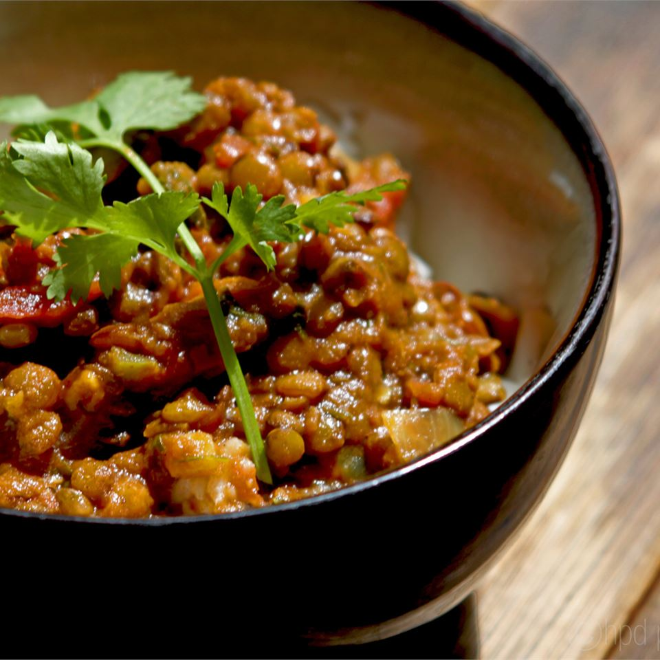

Spicy Indian Dahl

A spicy Indian lentil soup that can be enjoyed with rice or Naan, the Indian bread. A very healthy dish.
Ingredients
- 1 cup red lentils
- 2 tablespoons ginger root, minced
- 1 teaspoon mustard seed
- 2 tablespoons chopped fresh cilantro
- 4 tomatoes, chopped
- 3 onions, chopped
- 1 cup water
- Salt to taste
Steps
- Cook the lentils by boiling or pressure cooking until lentils are soft. (Pressure cooking is faster.)
- In a skillet heat the oil and add mustard seeds. When mustard seeds begin to flutter, add onions, ginger, jalapeno peppers, and garlic.
Saute until the onions and garlic are golden brown. Add coriander and cumin. Add chopped tomatoes. Saute the mixture well until tomatoes are well cooked.
- Add water. Boil 6 minutes. Add cooked lentils, stirring well. Add salt to taste, stirring well. Add finely chopped cilantro and remove from heat. Serve hot.
Main Menu